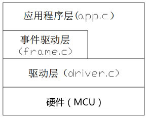

- 简介
- CAFrame 单片机C语言程序开发框架可用于不同的单片机，尤其适合8位小系统的软件开发。框架将硬件驱动和应用逻辑的实现分开， 以事件驱动的方式编写应用程序，从而使得应用功能的编写就如同VB6程序那样简单易维护。 框架程序共由三个头文件（CAFrame.h Cfg.h Driver.h）和三个源文件(Driver.c Frame.c App.c)组成 其层次结构如图：

Driver.c中的代码用于处理与硬件相关的底层驱动，Driver.h文件中声明与硬件相关的一些符号定义和用户自定义驱动函数的声明
驱动程序的编写主要通过修改这两个文件来实现.
CAFrame.h是框架标准符号、结构、函数的声明处，Frame.c是框架的实现文件，无论任何时候都不应该修改这两个文件。
注意： CAFrame.h文件中声明的以[drv_]为前缀的函数是框架所必须的驱动接口函数，这些函数在driver.c中必须实现.
App.c是应用逻辑实现文件，文件需要实现一个固定的函数InitApp,此函数在框架初始化后第一个被调用，在这个函数中设置好所有需要的事件处理函数。作为一个完整的app.c文件，下面的示例说明了开发者需要做些什么#include "CAFrame.h"void TimerEvent(void)//定时器事件处理函数{LED_FLASH;}void InitApp(void){frm_install_timer_event(0,200,TimerEvent);//安装0号定时器事件处理函数,定时触发周期为200ms}
- 程序运行优先级
- CAFrame并非是一个操作系统,而是一个典型的前后台程序结构，程序运行优先级只有中断级（INT_LEVEL）和应用级（APP_LEVEL). driver.c中一部分硬件驱动程序在中断中调用,它们工作在INT_LEVEL级,但这些对于APP来说是透明的，无需考虑的， 所有的接口函数以及用户代码（app.c)均运行在同一个优先级（APP_LEVEL），为此用户程序不会相互中断。
- CAFrame配置
- CAFrame的配置十分简单，Cfg.h文件中TIMER_MAX_COUNT是指定在APP中用到的最大定时器个数，INPUT_MAX_COUNT是系统输入口个数 EVENT_MAX_COUNT为通用事件ID个数。下面的“通用事件ID定义列表中”列出所用到的所有通用事件ID，值从0递增，但要保证小于EVENT_MAX_COUNT. MANAGE_MAIN 的值决定整个项目入口函数(main)是否托管给框架，如果值是1，就等于用户无需实现main函数，将main函数托管给了框架。 如果MANAGE_MAIN定义为0,称为非托管应用，需要在用户程序中实现一个如下的main函数:#define MANAGE_MAIN 1 //主程序托管//支持定时器个数，在应用程序中定时器编号从0开始小于此值#define TIMER_MAX_COUNT 4 //定时器个数#define INPUT_MAX_COUNT 2 //输入口个数#define EVENT_MAX_COUNT 2 //通用事件个数//通用事件ID定义列表#define EVENT_ADC_ID 0#define EVENT_UART_ID 1int main(void){CAFrameInit();//框架初始化while(1){//.. //主循环中的其它任务CAFramePoll(); //框架循环}return 0;}
- 通用事件应用
- 事件是框架中驱动层与应用层同步的主要方式，框架支持三种事件，分别是定时器事件、输入事件和通用事件，定时器事件和输入事件是框架固定的 特殊事件，而通用事件是用户编写外设驱动与应用层同步的主要方式，如UART,ADC的中断中可以通过通用事件的方式在应用层触发事件。通用事件运行原理如图：

首先需要在配置文件(cfg.h)中定义事件ID,如然后在驱动中断中触发事件： 如果在InitApp函数中已经用frm_install_event安装了事件处理函数，那么中断中一触发这个事件，框架会在中断结束后在后台（APP_LEVEL级）调用 事件处理函数。#define EVENT_UART_ID 1